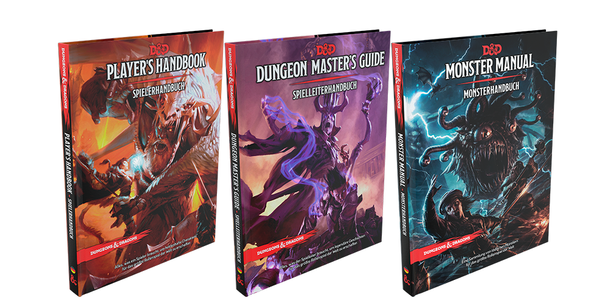

MATERIAL DE JUEGO
Fuente:¿Qué necesito para jugar a Dungeons & Dragons?
Si estás leyendo esto es porque tienes interés en sumergirte en los mundos de imaginación sin límites que dan los juegos de rol. Cuando los videojuegos, los juegos de tablero, el cine y otras ofertas lúdicas están circunscritas a mundos finitos, uno encuentra un puñado de dados en una tienda y se pregunta, ¿Qué necesito para jugar a Dungeons and Dragons?
-
Dados: Si llevas un tiempo jugando a esto ya habrás observado que existe cierto fetichismo alrededor de los dados. A todos nos gustan las cosas bonitas, y el mundo del poliedro tiene cosas verdaderamente espectaculares, dados de metal, de hueso, dados con otros dados dentro…
-
Hojas de personaje: El juego ya proporciona sus propias hojas de personaje, y hay herramientas gratuitas como Nivel 20 que permiten la gestión online de tus personajes, pero hay quien prefiere ir un poco más allá y comprar plantillas personalizadas, mucho más bonitas.
-
Mapas: Dungeons & Dragons se presta mucho a utilizar mapas, tanto mapas de reinos y regiones como mapas de mazmorras, ciudades y otras localizaciones. Algunos dungeon master crean sus propios mapas, mientras que otros compran auténticas obras de arte de la cartografía.
-
Miniaturas: Cuando los mapas del turno anterior son tiles, o plantillas de combate, el uso de miniaturas es obligado. Puedes reciclar miniaturas viejas que tengas de tu época de jugador de Warhammer, crear tus propias plantillas con una impresora o comprar figuras ad hoc que comercializa la propia compañía según la clase y raza de tu personaje.
-
Monedas, vasos y demás: No son necesarios para el juego, pero hay elementos que ayudan a meterse en la ambientación propia de un mundo de fantasía. Como en todo, hay precios para todos los gustos y para (casi) todos los bolsillos